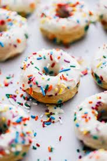

Mini Donuts

Description
Mini Donuts are much smaller regular iced donuts. They are a little complexed to make with the right equipment and are very cost effective. They normally consist of, dough, icing, and sprinkles. The dough is made of flour, eggs, milk, butter, sugar, and baking powder.
Ingredients
Dough (40 donuts)
- 1.5 cups of flour
- 0.5 cups of sugar
- 1.5 teaspoons of baking powder
- 0.5 teaspoons salt
- 75g of butter
- 1 egg
- 0.75 cups of milk
Icing and sprinkles (40 donuts)
- 300g icing sugar
- 30g '100s & 1000s'
Steps
- Pour flour in MixMaster
- Add sugar, baking powder, salt, egg, milk, and butter into MixMaster
- Turn on MixMaster to 1 speed.
- Once slightly mixed, slowly increase speed over 10 seconds until at 6 speed
- Leave at 6 for about 2 minutes
- Turn off MixMaster
- Plug in and turn on Mini Donut Maker
- Dab a lump of dough in each of the 7 molds of the machine and close the lid
- Wait until steam rises from machine to open lid and take out baked mini donuts
- Repeat steps 9-10 5 to 6 times
- Pour icing sugar into a bowl and add food colouring
- Stir into a paste
- Use a knife to smear icing on top of donut (Repeat for every donut)
- Sprinkle 100s and 1000s on top of iced donut (Repeat for every donut)
- Let the donuts sit so the icing can set or just enjoy them straight away